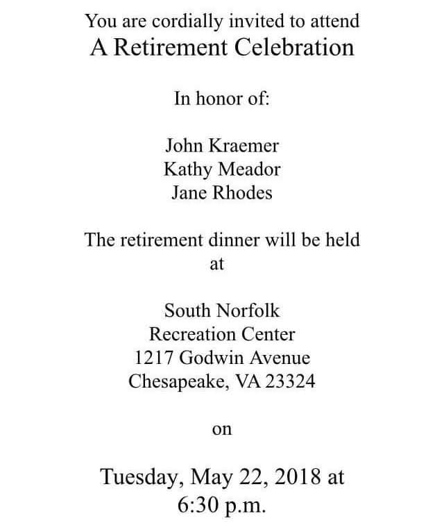
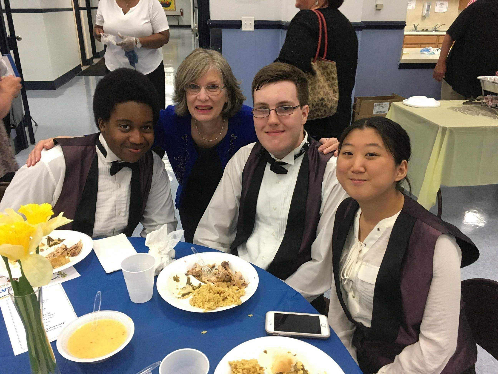
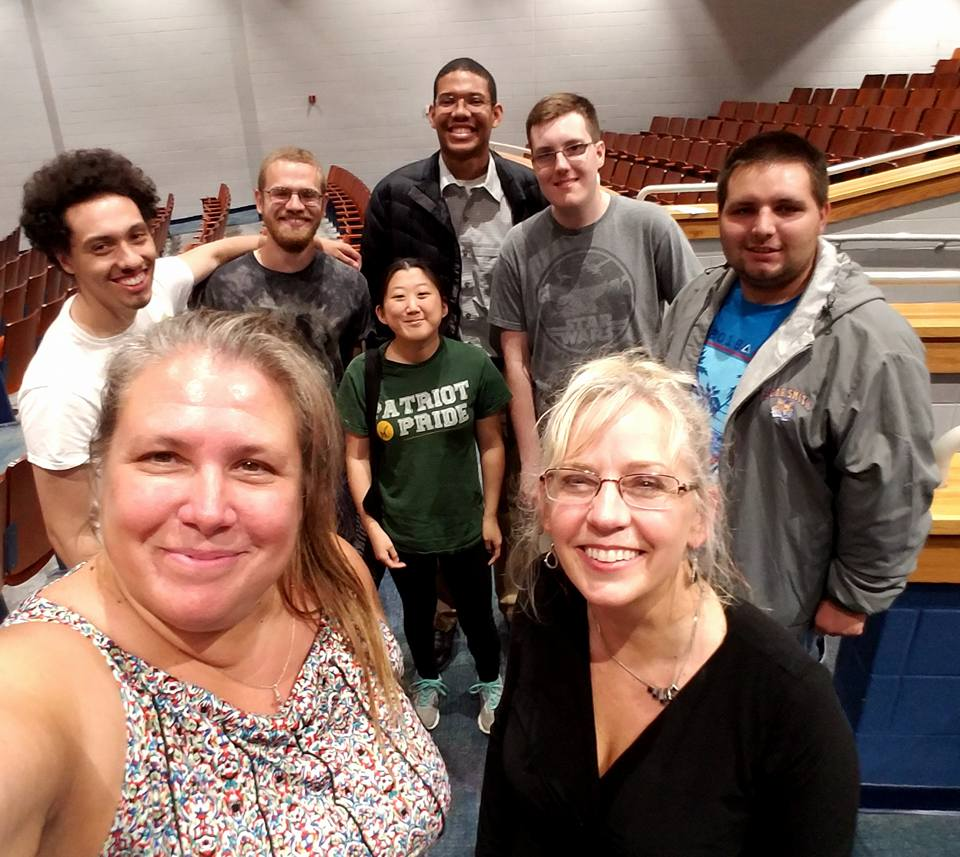
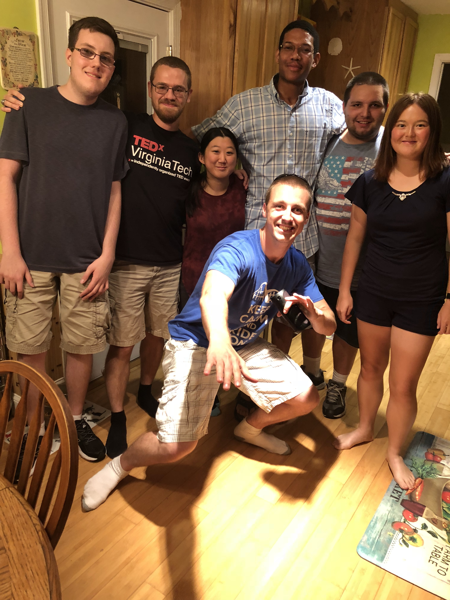

"Just keep me posted! Logan played on a few last week! 😁
He just asked me for our May dates 😉"
Our Origin Story
April 30, 2018
At 3:02 pm, Ms. Kringel messaged me on Facebook the dates for upcoming Strolling Strings performances, asking if I was available for any of them. I told her that I would be available on May 22, 2018, and right after, she said:
I never mentioned you in any of my messages to her, so what made her bring you up? And why did she include a winking face?
May 21, 2018
I actually texted you first at 8:17 pm asking if you wanted to play at both the IB grad ceremony and the retirement banquet with me. Originally you were just going to do the retirement banquet later that evening, but ended up playing at the IB ceremony with me as well. That was the first step in planning an amazing day, although we weren't expecting to spend almost 12 hours together...
May 22, 2018


I picked you up around noon (even though you almost forgot) and we embarked on a journey 5 minutes down the road to our alma mater. It was definitely an experience being around 14-17 year old high schoolers when we were both 20 years old but nevertheless it was really fun, plus we got to see Derrick. We had an early Chick-Fil-A meal in between the IB ceremony and the retirement ceremony where we were both still dressed in our Strolling Strings attire. You had to convince me that no one would care, which turned out to be true despite my protests. Then we performed at the South Norfolk Recreation Center where we reconnected with past teachers and celebrated their acheievements (with free dinner).
When we got back to your house at like 7:30 pm, you invited me in to hang out. We sat at your computer and had a very deep discussion - the first one we'd ever had. I left that night at 11:30 pm wondering what had happened back there, because I had a whole new perspective of you that I had never considered before.
May 27, 2018
What a day... This was the first time I really got to see a different side of you. It started out like any normal conversation where you said you were sick, and I told you to eat soup and drink a lot of water. But then it transitioned into talking about our lives more, asking about exes and crushes. You admitted your feelings to me which was so unexpected because I had never considered it before a few days ago. I can still remember the feeling in my stomach when you said you liked me - I was surrounded by my extended family and I kept rereading the message, trying to stop myself from smiling so hard. You were stepping way out of your comfort zone for me. I was taken aback at first but the more we talked that evening, the more my feelings grew for you.
May 29, 2018
We decided to gather the group together and go to the spring concert (which was really hard to plan), except that a key member *ahem Stephen* was missing. Although it was a bit awkward since you just told me you liked me, we still had a lot of fun hanging out with everyone.
June 18, 2018
Incredibles 2 came out today, and we loved it! Even though there were screaming children that didn't know how to behave in a movie theatre, it was such a fun experience to revisit our nostalgic childhood culture together. I had to work until 3 pm, but I got off a few minutes early and raced over to Edinburgh where we ended up walking in at the same time.
June 19, 2018

I was never really a party person, but for my birthday I always wanted to do something special with the people I liked. This particular year was different because I only wanted people there that I was close with and cared about. You and Daniel carpooled together and arrived late, which I later found out was due to both of you getting me gifts and handwritten cards. As we sat around the table and played games, Daniel physically got up from his chair to swap seats with you so you could be next to me. We ended up holding hands very discreetly under the table. I think we ended up inviting my brother to sit with us so we could play "Team Life" where we all paired up. Of course, Christine and I teamed up, since we were the only girls. You were with Johnny, and I'm pretty sure Stephen and my brother were teammates, leaving Ryan and Daniel. I honestly don't remember who won, but it was definitely a fun experience.
This picture was taken by my mom of all of us just standing around in the kitchen, but it captures the essence of the party. At the end, when you and Daniel were heading out, we talked to Stephen a little bit and sort of leaned up against each other (which apparently he didn't notice). It was a perfect end to a great night with friends and you.
July 4, 2018
Your mom held a cookout out your house with your dad and uncle, and you invited me over. Your dad and I met for the very first time here, and he actually remembered me from orchestra. It was great getting to meet the rest of your family since I had only met your mom. You actually tried to ask me out then, but I told you I wanted to wait because it was a holiday and I didn't want our anniversary to be a holiday. To be completely honest I still stand by that, but 3 days later would mark the best decision of my life.
July 7, 2018
This was the day we officially became a couple. Though if I recall, your wording was "So are we official?" Regardless, that was the moment we began our next chapter of life together! 🙂
« Senior Year The Here and Now »